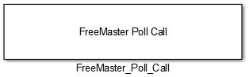
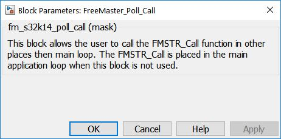

FreeMaster Poll Call Block
This block allows the user to call the FMSTR_Call function in other places than main loop. The FMSTR_Call is
placed in the main application loop when this block is not used, to be called during the "idle" time.
The FMSTR_Call function handles the protocol decoding and execution in the poll-driven or short interrupt modes.
In the poll-driven mode, this function also handles the interface communication with the PC.
In the long interrupt mode, this function typically compiles as an empty function, and can still be
called.
Block Image
Inputs:
- None
Outputs:
- None
Parameters and Dialog Box
Block Dependency
Please do the following:
- Use FreeMaster_Config block to configure FreeMaster embedded-side software driver.
Block Miscellaneous Details
- None